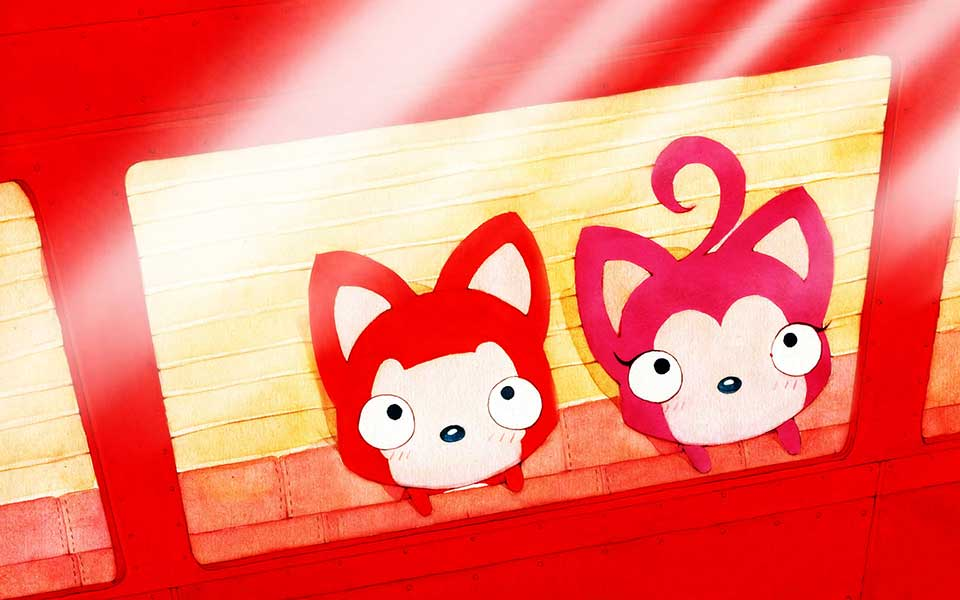

Claris ❤
Eddy
Para toda la vida
Presiona la tecla "↓" Para comenzar con la romántica declaración de un ingeniero
En el pasado, Eddy siempre vivió solo, disfrutando de la soledad y soñando con el amor.

El pasillo de una sola persona

La colina de una sola persona

El metro de una sola persona

El parque de diversiones de una sola persona

Pero él sigue siendo optimista, sonríe y espera

La vida tiene altibajos, como una montaña rusa.

Pero Eddy puede enfrentarlos con valentía y calma.

Siempre con una sonrisa brillante y confiada.

La vida no siempre es sencilla.

Pero Eddy puede afrontarla con valentía.
Está listo para todos los retos que vengan.


¿Pero dónde está el amor de Eddy?
¿Está en el espejo? Eddy no lo puede creer.

Le pregunta al árbol:
“¿Dónde está mi amor?”
Y el árbol le responde:
“Tal vez no esté lejos.”

Así que Eddy sigue caminando solo,
cruzando la nieve sin parar.

Hasta que un día, Eddy conoció a Claris.

A Eddy le gusta Claris, porque con ella y su sonrisa todo se volvió más brillante.

¿Pero Eddy le gustará a Claris?


Eddy sonrie...

Eddy quiere estar con Claris
Entonces Eddy a menudo
va a buscar a Claris

Y luego salen a jugar juntos

Por la noche, Eddy lleva a Claris a casa

Hasta muy tarde,
Eddy vuelve a casa solo

Luego se duerme feliz, soñando que está con Claris

Eddy quiere ir de compras con Claris.

Luego, Claris y Eddy van a muchos lugares juntos

Eddy tambien quiere comer muchas cosas con Claris

Siempre están juntos.

Luego, Eddy comienza a aprender muchas habilidades

Como cocinar

Para que puedan disfrutar, la comida que preparan juntos.

Luego, van a la misma estación, y van felices al trabajo juntos
Eddy se siente muy feliz.
Porque tuene un lugar,
donde está Claris esperandole.

A veces pueden pelear.

Eddy no quiere eso...


Debe ser que hice algo mal, piensa Eddy.
Si Claris no está a su lado,
no hay paisaje fuera de la
ventana.

Si Claris no está con él, a su lado.


¿Cómo puede Eddy volar más alto y más lejos?
Eddy no quiere que nada salga mal.
Él hará todo por
Claris,
porque la quiere de verdad.


Quiero estar contigo siempre
El amor es como las flores,
Necesita ser regado con amor
y tolerancia.

Hasta que un día, Eddy
comienza a preparar una sorpresa.


Eddy está muy feliz, porque imagina
la cara de Claris cuando lo
vea

Pensando en el futuro, tal vez tendrán toda una vida juntos.
Eddy está muy feliz, tal vez pueda ir con Claris a muchos lugares
del mundo
Eddy seguirá esforzándose
Por el castillo de sueños de Claris y él


Eddy es muy feliz porque conoció a Claris.
Cree que todos los días serán felices a partir de ahora.
Simplemente disfrutando cada momento con Claris.
Eddy quiere vivir una vida feliz con Claris


¿Qué tan lejos es para siempre?
Un segundo más que el tiempo es para siempre,
te amaré para siempre
¿Qué tan grande es el mundo?
Donde vayas, el mundo será tan grande
Ojalá pasen mucho tiempo juntos
y sean felices para siempre.


¡Te amo!

Creo que la historia de Claris y Edier continuará.
Y será emocionante y con muchas aventuras.
Claris, te amo.
-- Presiona la tecla “Esc" para una sorpresa